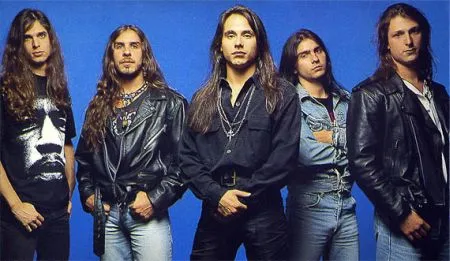

Acervo Bandas
Angra

- Angra é uma banda brasileira de power metal formada em 1991, conhecida por misturar elementos de música clássica e brasileira ao metal.
- Suas músicas mais populares são: Carry On, Spread Your Fire e Rebirth.
- É uma das bandas mais reconhecidas do metal nacional e internacional, com álbuns como Angels Cry e Temple of Shadows aclamados pelo público e crítica.
EDUARDO ANTÔNIO DE CARVALHO LIMA - R.A 5159764